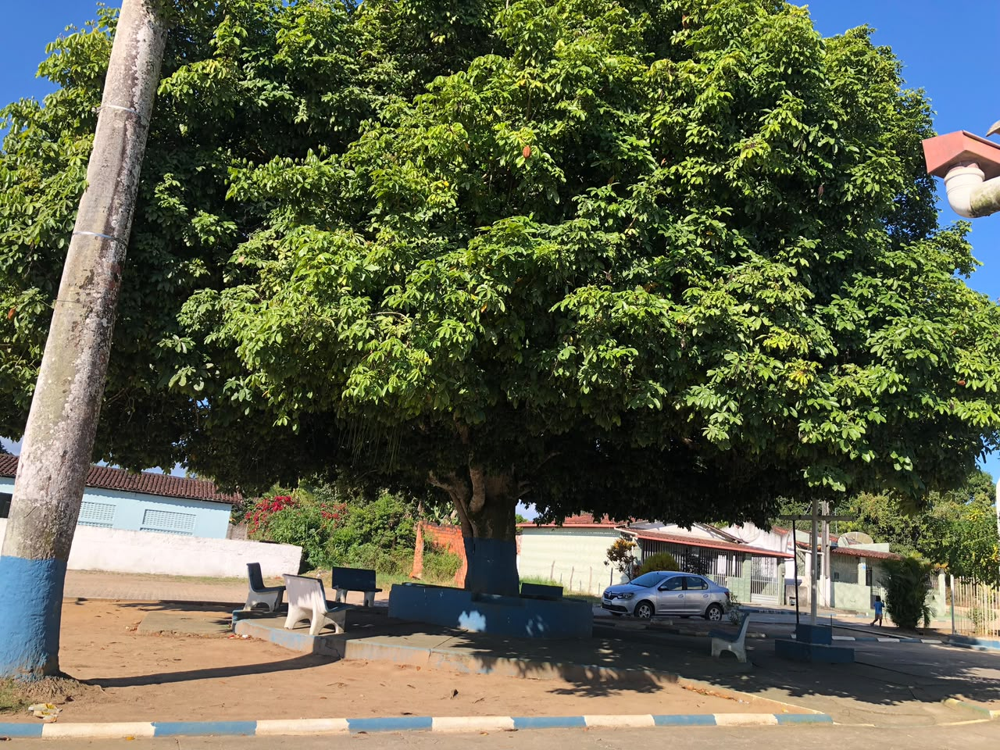
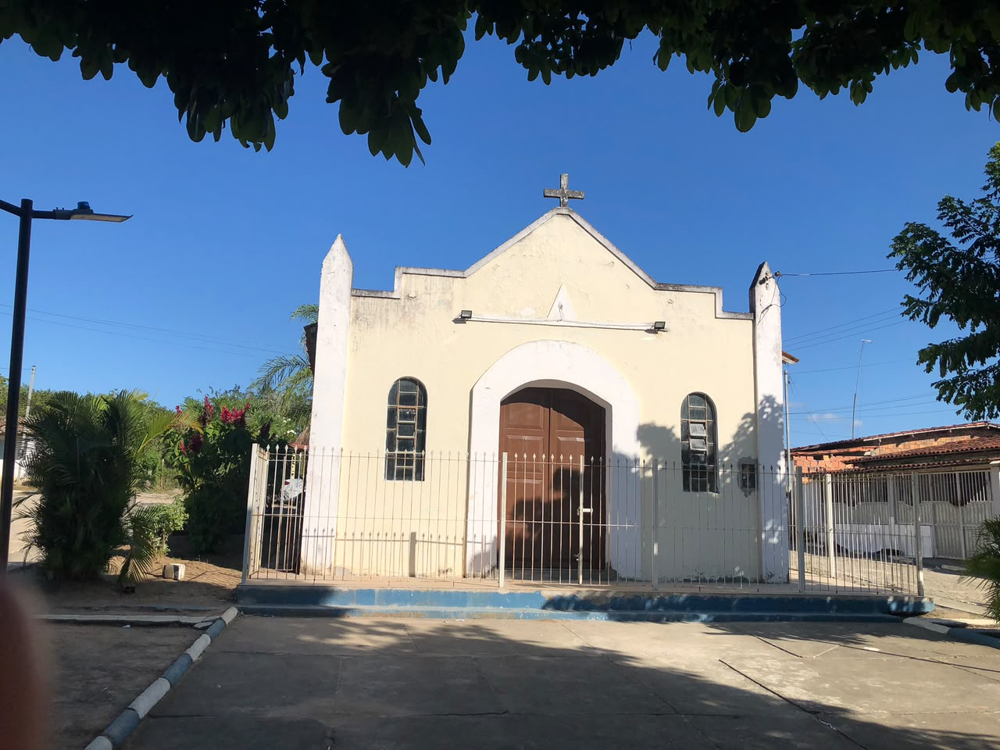
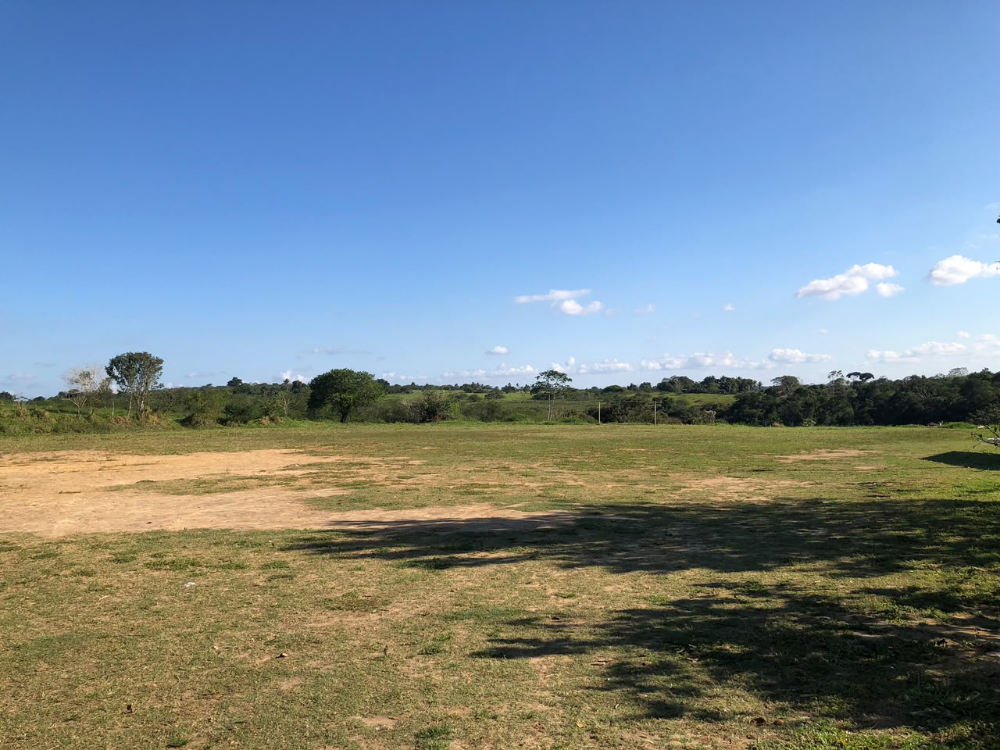
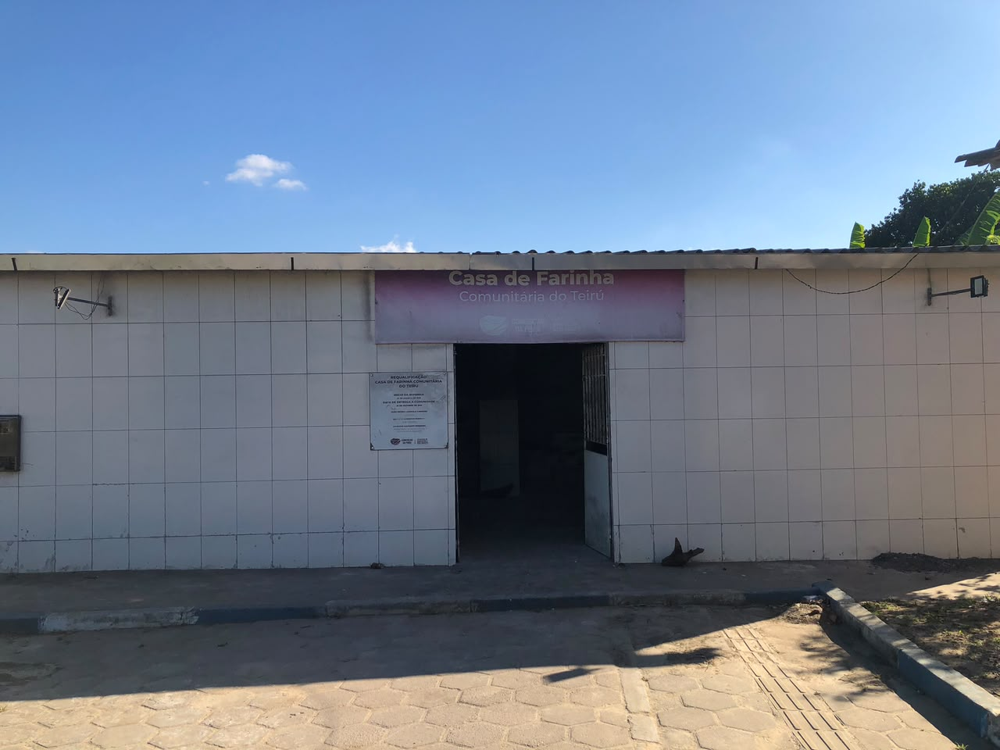
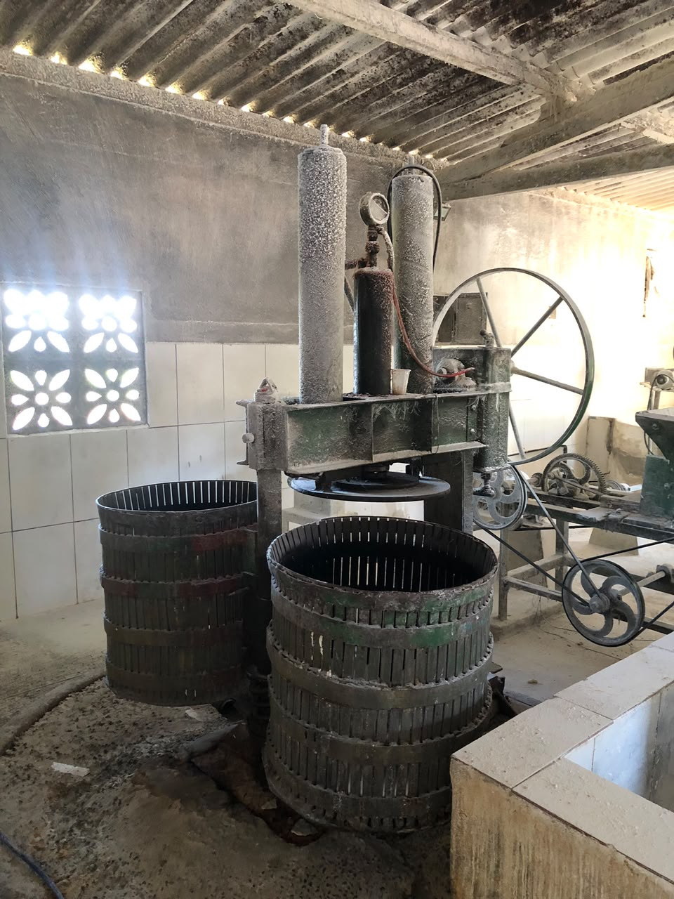
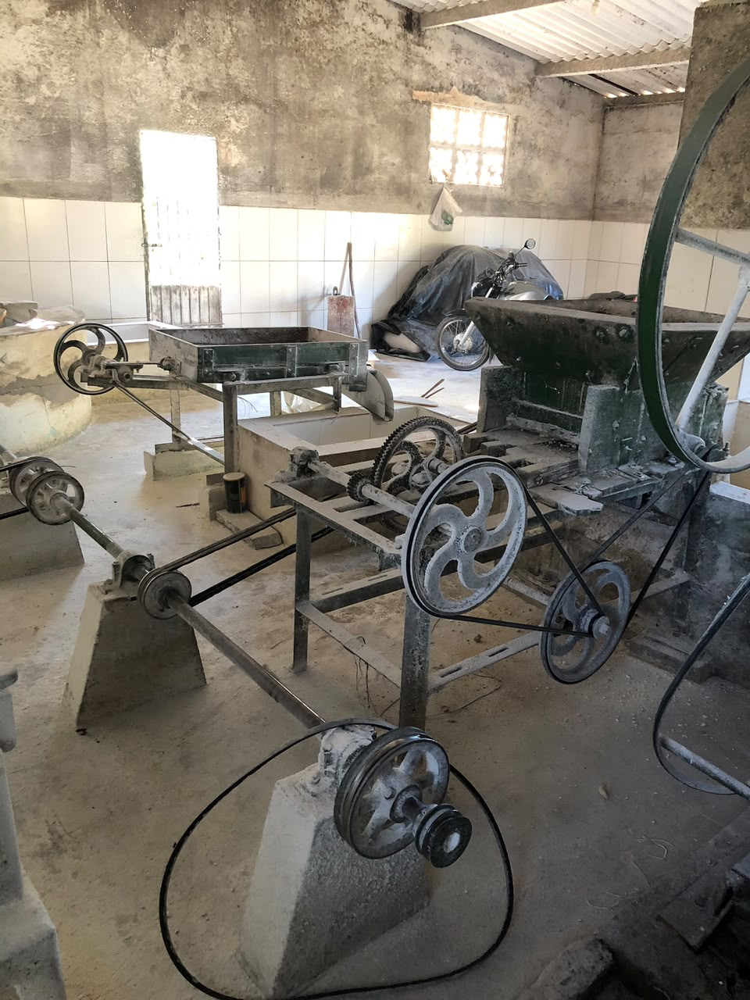

Praça
Um dos espaços registrados na visita. Ainda queremos compreender seus usos cotidianos, suas transformações e seu papel nos encontros da comunidade.

Uma primeira aproximação à comunidade por meio dos lugares registrados em campo.
Nesta primeira visita a Teiru, registramos alguns espaços da comunidade e reunimos informações iniciais. Não realizamos entrevistas com moradores. Por isso, esta página apresenta o que foi observado e, sobretudo, as perguntas que orientarão o retorno da pesquisa.
As fotografias desta primeira saída de campo são registros do presente e pontos de partida para novas perguntas.
Um dos espaços registrados na visita. Ainda queremos compreender seus usos cotidianos, suas transformações e seu papel nos encontros da comunidade.

Durante a visita, recebemos a informação preliminar de que a padroeira é chamada localmente de “Maria Concebida” e de que uma novena havia acabado de ocorrer. Essas informações ainda serão documentadas com moradores.

O campo foi registrado como parte importante da paisagem local. A pesquisa ainda deverá investigar equipes, campeonatos, usos, gerações de jogadores e formas de sociabilidade associadas ao futebol.

A fachada identifica o equipamento como Casa de Farinha Comunitária do Teiru. O espaço abre uma frente de investigação sobre produção, trabalho, tecnologia, mandioca e formas coletivas de uso.
O espaço e seus equipamentos podem ser tratados como fontes materiais para investigar trabalho, técnica e modos de produção.


Que máquinas são essas e como funcionam? Quem trabalha aqui? Quando a casa foi instalada? De quem são os equipamentos? De onde vem a mandioca? Como a produção é organizada? O funcionamento mudou ao longo do tempo?
A página distingue registros produzidos pela equipe de informações que ainda precisam ser verificadas e aprofundadas.
Teiru já foi visitada pela equipe. Foram registrados a praça, a igreja, o campo de futebol e a Casa de Farinha Comunitária. Também foram recebidas informações preliminares sobre a devoção local e sobre uma novena realizada recentemente.
História da comunidade; memórias de moradores; trajetória da praça; festas e religiosidade; futebol; história e funcionamento da Casa de Farinha; trabalho e produção; fotografias antigas; trajetórias de mulheres; relações de Teiru com outras comunidades.
As próximas visitas irão ampliar a página com fontes orais, fotografias, objetos e trajetórias.
Ainda não registramos trajetórias de mulheres de Teiru. Esta seção será construída nas próximas visitas.
Ainda não realizamos entrevistas em Teiru. Os primeiros depoimentos serão incorporados quando forem produzidos e autorizados.
Os equipamentos da Casa de Farinha já aparecem como primeiras fontes materiais a investigar.
Os seis registros desta primeira visita formam o núcleo inicial do álbum da comunidade.
Primeira visita: reconhecimento de espaços, produção de fotografias, coleta de informações preliminares e definição de questões para o retorno.